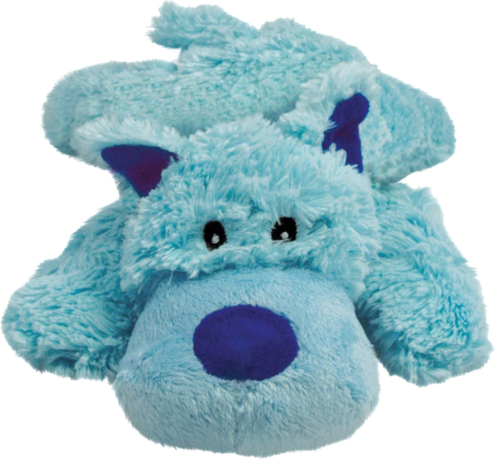

| Product |
Description |
Price |
Image |
User Rating |
| KONG Cozie Baily the Blue Dog Toy |
The KONG Cozies are cute, soft and cuddly plush toys made with an extra layer of material, so
they're extra tough.
Cozies are perfect for a game of fetch or as a comfort toy for your furry friend.
Grab one of the 10 amazingly cute Cozie characters for your dog and we know your dog will love you
for it.
|
$8.29 |
 |
☆☆☆☆ |
| Frisco Bird Teaser with Feathers Cat Toy |
This is no angry bird, but rather the perfect play buddy for your kitty from Frisco by Chewy.
Wave it around and let the colorful feathers, dangly string, crinkly sound and catnip entice bored
felines to jump into play.
Leap, actually!
By stimulating their natural hunting instincts, it's the perfect way to provide cats with the daily
exercise they need.
Playing together also helps strengthen the bond between you and your cat, on the daily.
|
$3.45 |
|
☆☆☆☆☆ |
| Penn-Plax SpongeBob Pineapple Home Aquarium Ornament |
SpongeBob fans of all ages can bring a little bit of Bikini Bottom to their own aquarium with the
Penn-Plax SpongeBob Pineapple Home Aquarium Ornament.
This beautifully colored and incredibly detailed resin replica features the iconic home of SpongeBob
himself.
It makes a great hideout for fish as they swim in and out of the multiple openings.
The Pineapple Home Aquarium Ornament can be used with other SpongeBob decorations to recreate the
magical Bikini Bottom world.
It's great for aquariums, terrariums or even as a stand-alone desk display.
|
$5.87 |
|
☆☆☆☆ |
| SunGrow Bird Chew Toy, Medium & Large Parrot Foraging Blocks for Cage |
Keep your feathered friend entertained with the SunGrow Parrot Chew Toy.
These rainbow wood foraging blocks provide your beaked buddy with plenty of mental and physical
activity as this toy features multiple shapes and colors for him to chew on and play with.
The different textures will keep your companion interested and occupied with wooden blocks and
cotton rope in a variety of colors.
This toy also includes a metal buckle to hold it in place.
Made of 100% natural materials, this toy is suggested for macaws, African grey cockatoos, and a
variety of Amazon parrots.
|
$12.99 |
|
☆☆☆☆☆ |
| Shires Equestrian Products Carrot Ball Horse Toy, Blue |
Save your best buddy from boredom with the Shires Equestrian Products Carrot Ball Horse Toy.
This unique horse toy is designed to dispense carrots, turnips, parsnips, apples and more.
It is crafted to help increase dexterity, encourage learning and provide healthy entertainment while
discouraging cribbing and chewing.
This carrot ball toy for horses is built with durable anti-burst construction that inflates easily
using an air pump and the included adaptor.
It features an innovative design that varies the effort required to remove the treats as your
carrot-loving companion gets more familiar with his new favorite toy.
|
$47.99 |
 |
☆☆☆☆ |